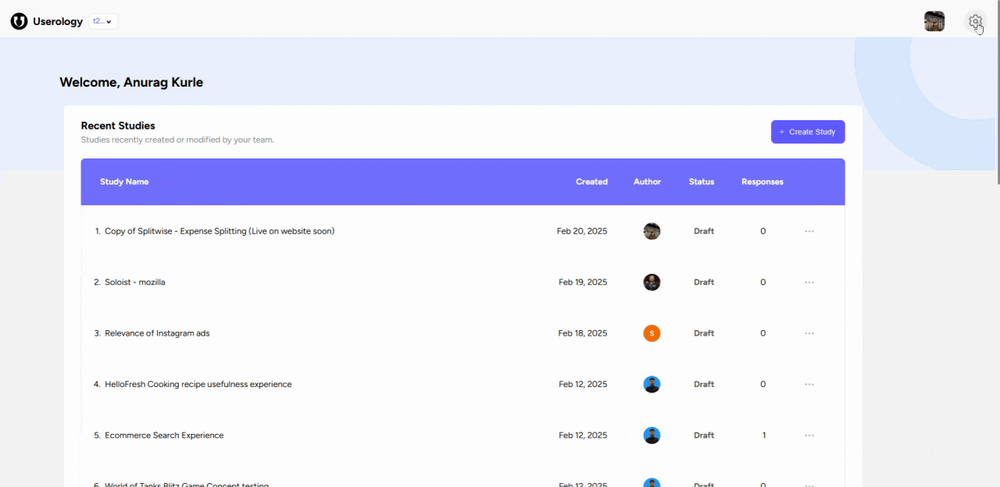
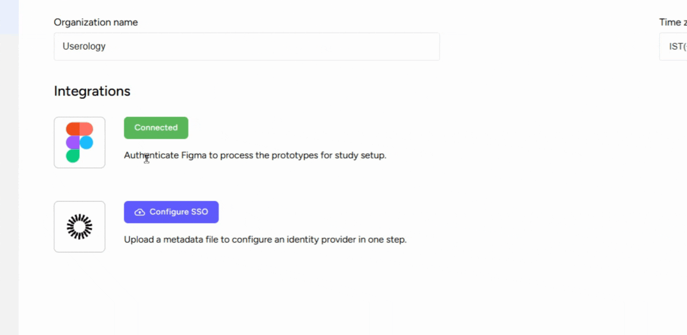

1. Accessing Organization Settings
To begin, navigate to the dashboard of your Userology platform. Click on the 'Settings' button located at the top right corner of the screen.

2. Setting up Organization Icon and name
In the 'Organization' tab, you'll find an option to upload an organization icon or logo. Click on this option and select the desired image from your device to set it as your organization's logo.
In the same tab, you can change or set the name of your organization. Simply type in the desired name in the provided field.

3. Integrating with Other Platforms
The 'Organization' tab also allows you to integrate with other platforms such as FIGMA. This can be useful for processing prototypes for study setup.
You can also configure a single sign on option by uploading a metadata file to set up an identity provider in one step.

4. Setting Your Time Zone
You can set your current time zone depending on your location. Click on the 'Time Zone' option and select your appropriate time zone from the dropdown menu.
If you need further help, please email us at support@userology.co